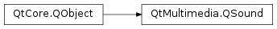

QSound¶
Synopsis¶
Functions¶
- def
fileName() - def
isFinished() - def
loops() - def
loopsRemaining() - def
setLoops(arg__1)
Detailed Description¶
The
PySide2.QtMultimedia.QSoundclass provides a method to play .wav sound files.Qt provides the most commonly required audio operation in GUI applications: asynchronously playing a sound file. This is most easily accomplished using the static
PySide2.QtMultimedia.QSound.play()function:QSound::play("mysounds/bells.wav");Alternatively, create a
PySide2.QtMultimedia.QSoundobject from the sound file first and then call thePySide2.QtMultimedia.QSound.play()slot:QSound bells("mysounds/bells.wav"); bells.play();In both cases, the file may either be a local file or in a resource .
Once created a
PySide2.QtMultimedia.QSoundobject can be queried for itsPySide2.QtMultimedia.QSound.fileName()and total number ofPySide2.QtMultimedia.QSound.loops()(i.e. the number of times the sound will play). The number of repetitions can be altered using thePySide2.QtMultimedia.QSound.setLoops()function. While playing the sound, thePySide2.QtMultimedia.QSound.loopsRemaining()function returns the remaining number of repetitions. Use thePySide2.QtMultimedia.QSound.isFinished()function to determine whether the sound has finished playing.Sounds played using a
PySide2.QtMultimedia.QSoundobject may use more memory than the staticPySide2.QtMultimedia.QSound.play()function, but it may also play more immediately (depending on the underlying platform audio facilities).If you require finer control over playing sounds, consider the
PySide2.QtMultimedia.QSoundEffectorPySide2.QtMultimedia.QAudioOutputclasses.See also
-
class
PySide2.QtMultimedia.QSound(filename[, parent=nullptr])¶ Parameters: - filename – unicode
- parent –
PySide2.QtCore.QObject
Constructs a
PySide2.QtMultimedia.QSoundobject from the file specified by the givenfilenameand with the givenparent.The file can either be a local file or in a resource .
See also
-
PySide2.QtMultimedia.QSound.Loop¶ Constant Description QSound.Infinite Can be used as a parameter to PySide2.QtMultimedia.QSound.setLoops()to loop infinitely.
-
PySide2.QtMultimedia.QSound.fileName()¶ Return type: unicode Returns the filename associated with this
PySide2.QtMultimedia.QSoundobject.See also
PySide2.QtMultimedia.QSound.QSound()
-
PySide2.QtMultimedia.QSound.isFinished()¶ Return type: PySide2.QtCore.boolReturns true if the sound has finished playing; otherwise returns false.
-
PySide2.QtMultimedia.QSound.loops()¶ Return type: PySide2.QtCore.intReturns the number of times the sound will play. Return value of
QSound::Infiniteindicates infinite number of loops
-
PySide2.QtMultimedia.QSound.loopsRemaining()¶ Return type: PySide2.QtCore.intReturns the remaining number of times the sound will loop (for all positive values this value decreases each time the sound is played). Return value of
QSound::Infiniteindicates infinite number of loops
-
static
PySide2.QtMultimedia.QSound.play(filename)¶ Parameters: filename – unicode Plays the sound stored in the file specified by the given
filename.The file can either be a local file or in a resource .
-
PySide2.QtMultimedia.QSound.play() This is an overloaded function.
Starts playing the sound specified by this
PySide2.QtMultimedia.QSoundobject.The function returns immediately. Depending on the platform audio facilities, other sounds may stop or be mixed with the new sound. The sound can be played again at any time, possibly mixing or replacing previous plays of the sound.
-
PySide2.QtMultimedia.QSound.setLoops(arg__1)¶ Parameters: arg__1 – PySide2.QtCore.intSets the sound to repeat the given
numberof times when it is played.Note that passing the value
QSound::Infinitewill cause the sound to loop indefinitely.See also
-
PySide2.QtMultimedia.QSound.stop()¶ Stops the sound playing.
See also
© 2018 The Qt Company Ltd. Documentation contributions included herein are the copyrights of their respective owners. The documentation provided herein is licensed under the terms of the GNU Free Documentation License version 1.3 as published by the Free Software Foundation. Qt and respective logos are trademarks of The Qt Company Ltd. in Finland and/or other countries worldwide. All other trademarks are property of their respective owners.